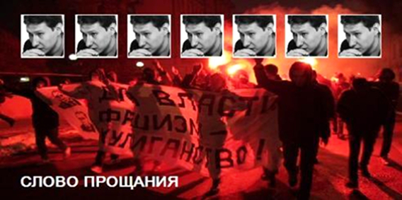

19 января 2009 года по дороге с пресс-конференции «Незаконный выход Буданова из колонии: игнорирование суда и прямая выгода боевиков. Что делать дальше?» у дома №1 по улице Пречистенка был убит адвокат, президент «Института верховенства права»
Маркелов Станислав Юрьевич.
Адвокат Станислав Маркелов вел ряд громких дел. В частности, он представлял интересы потерпевших по громкому делу об убийстве чеченской девушки Эльзы Кунгаевой, был одним из адвокатов жестоко избитого главного редактора и журналиста газеты «Химкинская правда» Михаила Бекетова. Маркелов вел также многие дела антифашистов и активистов общественных движений.

ОН СЧИТАЛ: Кто действительно любит Родину, не будет орать об этом на каждом углу и клясться в своём патриотизме. Тем более, он не будет принуждать к этому других или делать патриотизм государственной доктриной. Намного легче скрывать своё бессилие за громкой трескотнёй о любви к Родине, чем попытаться отвоевать свои права.
ОН ПРЕДУПРЕЖДАЛ: Те, кто получает с нас прибыль, объединены, а нас заставляют разобщаться и драться друг с другом. Наша страна всегда была многонациональной, а сейчас нас вынуждают разбегаться по национальным углам и ненавидеть соседей.
ОН БЫЛ ПРАВ: Патриотизм выпустил демона национализма из заточения и провоцирует всё новые и новые национальные конфликты. Россия от этого становится всё слабее, зато как радуются буржуи, наживающиеся на войнах и межнациональных конфликтах.
ОН ПОНИМАЛ: Народ и власть никогда не были вместе, вторые всегда жировали за счёт бесправия и нищеты первых.
ОН ВЕРИЛ В ЛЮДЕЙ: Не надо лезть к нам в мозги, проверять, насколько мы любим свою Родину. Люди сами разберутся, кого и как им любить.
Высокий, стремительный, остроумный - входил в любую компанию и сразу – шутки, смех, вопросы, ответы… Стас пришел.
Он был всем нужен: в Мордовии в зонах избиения и пытки, Станислав, надо съездить; старик, смотрел на твоем сайте «Правовую калошу» - ну вы судейских просто в капусту покрошили; Станислав Юрьевич, мы хотим на практике у Вас поработать; «молодых гражданских активистов в суде защищает адвокат Маркелов»…
Стас, не уходи! Ушел… Светлая память!
19-01-09
Институт верховенства права
Использованы фото ВВС, «Новая газета»
ОН ПРЕДУПРЕЖДАЛ: Те, кто получает с нас прибыль, объединены, а нас заставляют разобщаться и драться друг с другом. Наша страна всегда была многонациональной, а сейчас нас вынуждают разбегаться по национальным углам и ненавидеть соседей.
ОН БЫЛ ПРАВ: Патриотизм выпустил демона национализма из заточения и провоцирует всё новые и новые национальные конфликты. Россия от этого становится всё слабее, зато как радуются буржуи, наживающиеся на войнах и межнациональных конфликтах.
ОН ПОНИМАЛ: Народ и власть никогда не были вместе, вторые всегда жировали за счёт бесправия и нищеты первых.
ОН ВЕРИЛ В ЛЮДЕЙ: Не надо лезть к нам в мозги, проверять, насколько мы любим свою Родину. Люди сами разберутся, кого и как им любить.
Высокий, стремительный, остроумный - входил в любую компанию и сразу – шутки, смех, вопросы, ответы… Стас пришел.
Он был всем нужен: в Мордовии в зонах избиения и пытки, Станислав, надо съездить; старик, смотрел на твоем сайте «Правовую калошу» - ну вы судейских просто в капусту покрошили; Станислав Юрьевич, мы хотим на практике у Вас поработать; «молодых гражданских активистов в суде защищает адвокат Маркелов»…
Стас, не уходи! Ушел… Светлая память!
19-01-09
Институт верховенства права
Использованы фото ВВС, «Новая газета»